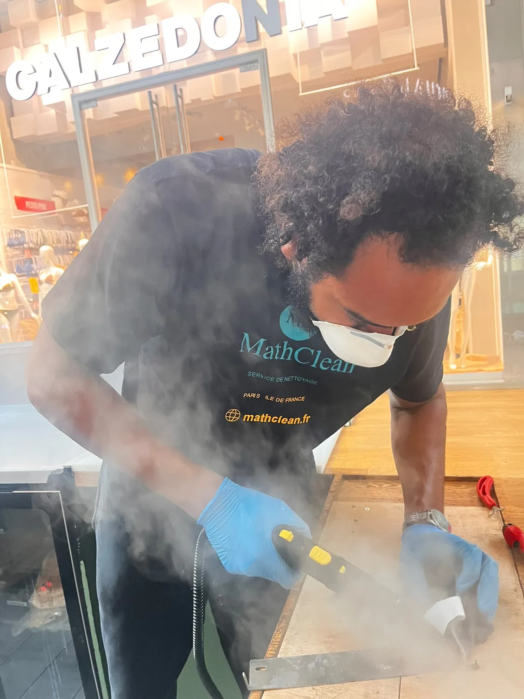
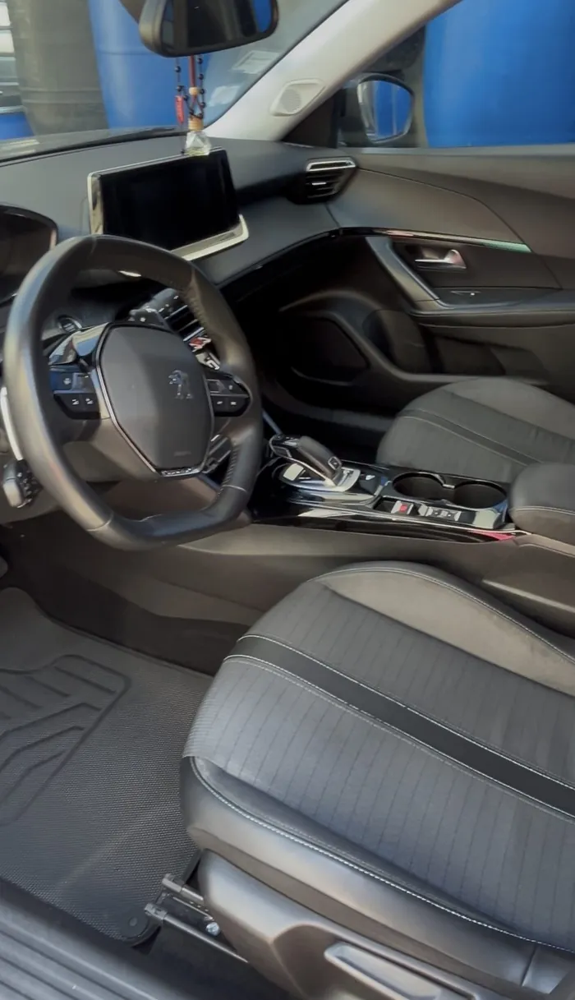
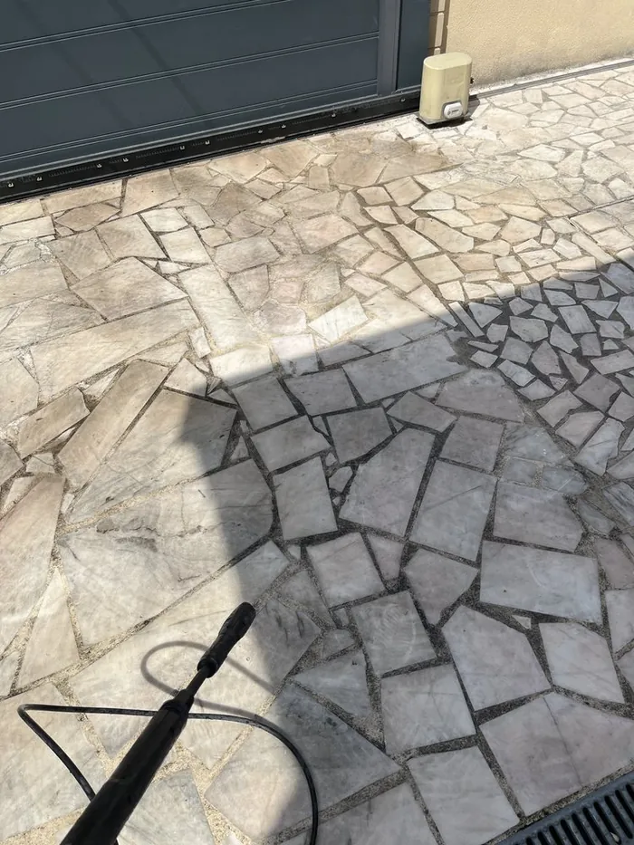
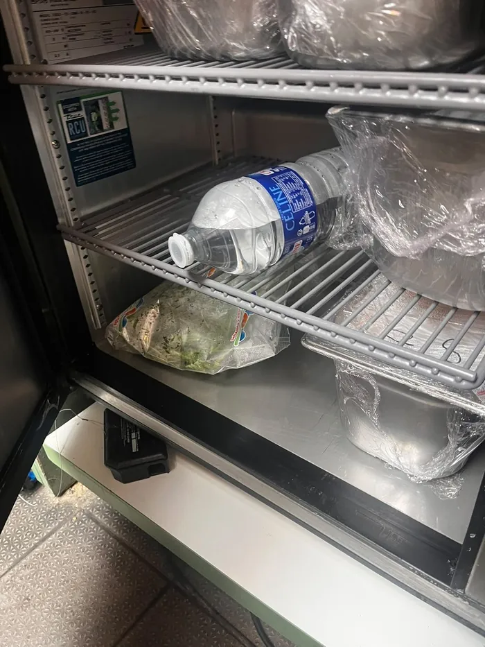
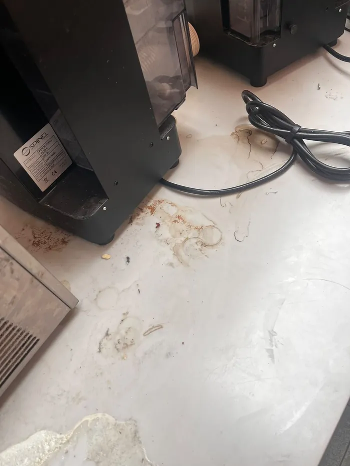

Nettoyer et entretenir son canapé en tissu
Aspirer chaque semaine, tamponner sans frotter, ne jamais détremper : les trois réflexes qui évitent les auréoles et espacent les nettoyages en profondeur.
Lire l'article
Automobile, textile, bateau, terrasse, vitres, entreprise, ozone et fin de chantier. Nous venons chez vous, entièrement équipés, 7 jours sur 7 — sans acompte, et vous ne réglez qu'une fois le résultat constaté.
Chaque matière appelle un produit et un geste différents. C'est ce travail de diagnostic — comprendre la matière avant de la nettoyer — qui sépare un résultat correct d'un résultat qui tient.
MathClean est une entreprise individuelle installée à Tremblay-en-France (93). Pas de centre d'appels, pas de sous-traitance : quand vous appelez le 06 23 07 52 59, vous parlez directement à la personne qui viendra chez vous.
Nous nous déplaçons avec nos machines, nos produits, notre eau et notre électricité. Vous n'avez ni prise ni point d'eau à fournir, ce qui nous permet d'intervenir en parking souterrain, en pied d'immeuble ou à quai.

Des interventions réelles, chez nos clients particuliers et professionnels. Faites glisser le curseur pour comparer.







Des règles simples, valables sur toutes nos prestations et dans tous les départements franciliens.
Week-ends et jours fériés compris. Pour les commerces et les restaurants, nous travaillons aussi en soirée ou de nuit, sans gêner votre activité.
Une estimation claire, détaillée poste par poste, gratuite et sans engagement. Le tarif annoncé est celui que vous payez.
Sous 24 à 48 h à Paris et en petite couronne, sous 48 à 72 h en grande couronne. Délais confirmés lors de la prise de rendez-vous.
Choisis pour ne pas agresser les matériaux, et sûrs pour les enfants comme pour les animaux. Quand la vapeur suffit, nous nous en passons.
Machines, produits, eau et électricité. Vous n'avez ni prise ni point d'eau à fournir : nous intervenons en parking, en pied d'immeuble ou à quai.
Vous réglez après l'intervention, une fois le résultat constaté avec vous. Espèces, carte bancaire ou virement.
Par téléphone ou via le formulaire de devis. Quelques photos suffisent souvent à cadrer précisément l'intervention.
Gratuit, détaillé poste par poste, frais de déplacement compris. Réponse sous 24 h.
Sous 24 à 48 h à Paris et en petite couronne, sous 48 à 72 h en grande couronne. Nous venons entièrement équipés.
Contrôle final ensemble avant notre départ. Aucun acompte : le règlement se fait après l'intervention.
Depuis notre atelier de Tremblay-en-France (93). Frais de déplacement : 5 € par tranche de 5 km depuis notre atelier de Tremblay-en-France (93), annoncés avant que vous validiez.
Tous nos avis sont publics et vérifiés sur Google : aucun témoignage n'est reproduit ici sans sa source.
Nous ne publions aucun avis rédigé par nos soins. Nos retours clients sont consultables dans leur intégralité sur notre fiche Google, avec le nom et la date de chacun.
Les packs démarrent à 40 € pour un Extérieur Éclat sur citadine et vont jusqu'à 240 € pour un Intégral sur un grand véhicule. Le détail des quatre packs et des options figure sur notre page tarifs.
Oui, c'est notre mode d'intervention principal, partout en Île-de-France. Nous venons avec notre matériel, notre eau et notre électricité : vous n'avez ni prise ni point d'eau à fournir.
Entre 1 h et 4 h selon la prestation. Un canapé 3 places demande environ 1 h, un Intérieur Prestige automobile près de 3 h, une remise en état après travaux une journée complète.
Aspiration complète de l'habitacle et du coffre, shampoing des tapis et moquettes, puis désinfection des allergènes et acariens par vapeur haute température sur les sièges, le volant, les tapis et les surfaces planes. Le coffre est compris, sans supplément.
Non, ils s'ajoutent au prix de la prestation : 5 € par tranche de 5 km entre notre atelier de Tremblay-en-France (93) et votre adresse. Le montant vous est annoncé avant que vous validiez. Aucune surprise à l'arrivée.
Nous privilégions des produits respectueux de l'environnement et de votre santé, sans danger pour les enfants ni les animaux. La vapeur haute température nous permet en outre de désinfecter de nombreuses surfaces sans aucun produit chimique.
Non. Vous réglez après l'intervention, une fois le résultat constaté avec vous. Nous acceptons les espèces, la carte bancaire et le virement.
Oui : bureaux, locaux commerciaux, restaurants et commerces, en passage ponctuel ou régulier, avec facturation entreprise. Nous réalisons également le nettoyage de fin de chantier pour les artisans et les agences.
Les huit départements franciliens : Paris (75), Hauts-de-Seine (92), Seine-Saint-Denis (93), Val-de-Marne (94), Essonne (91), Yvelines (78), Seine-et-Marne (77) et Val-d'Oise (95).
Par le formulaire de notre page devis, ou par téléphone au 06 23 07 52 59. Nous répondons sous 24 h et intervenons 7j/7 en Île-de-France.
Nos méthodes de professionnels, expliquées simplement — y compris les erreurs qui coûtent cher.
Aspirer chaque semaine, tamponner sans frotter, ne jamais détremper : les trois réflexes qui évitent les auréoles et espacent les nettoyages en profondeur.
Lire l'articleNous passons près d'un tiers de notre vie sur notre matelas. Aération, protège-matelas et traitement haute température : ce qui marche vraiment contre les allergènes.
Lire l'articleLaine, soie ou synthétique : la fibre décide de la méthode.
Lire l'articleDevis gratuit et sans engagement, réponse sous 24 h. Nous intervenons 7j/7 à Paris et dans toute l'Île-de-France.